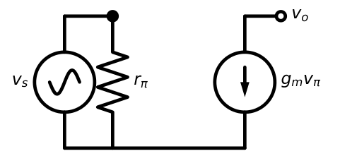
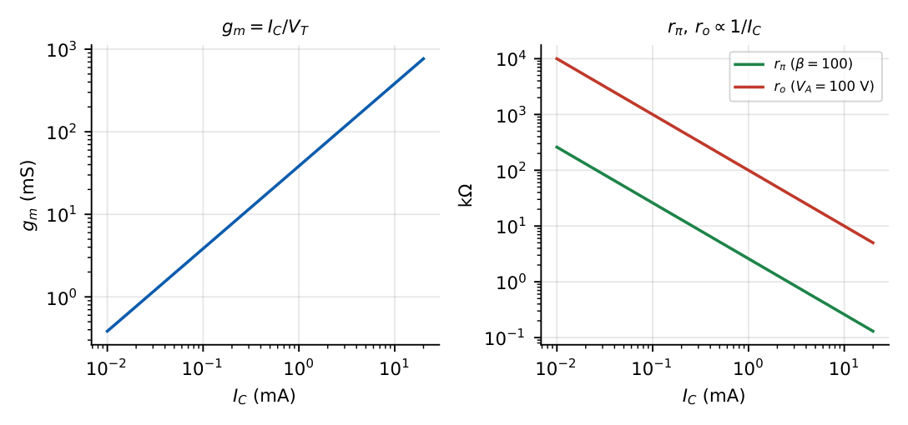
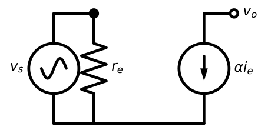
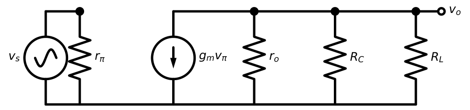

BJT Small-Signal Model
In this chapter
- 8.1 Concept of small-signal operation
- 8.2 Hybrid-\(\pi\) model
- 8.3 Transconductance
- 8.4 Input resistance
- 8.5 Output resistance
- 8.6 \(r_\pi\), \(g_m\), \(r_o\) relationships
- 8.7 T-model
- 8.8 Conversion between models
- 8.9 Small-signal voltage gain
- 8.10 Current gain
- 8.11 Input and output impedance
- 8.12 GATE problem-solving methods
8.1 Concept of small-signal operation
Write every quantity as a DC value plus a small signal: \(v_{BE}=V_{BE}+v_{be}\), \(i_C=I_C+i_c\). Since \(i_C=I_Se^{v_{BE}/V_T}\), \[i_C=I_Ce^{v_{be}/V_T}\approx I_C\left(1+\frac{v_{be}}{V_T}\right)\quad\text{if }v_{be}\ll V_T\ (\lesssim10\ \text{mV}).\] So \(i_c=(I_C/V_T)v_{be}\): the signal relation is linear. To analyse an amplifier: (1) solve the DC circuit, (2) compute the small-signal parameters at that bias, (3) replace DC sources by short circuits (voltage) or open circuits (current), replace the transistor by its small-signal model, (4) solve the linear AC circuit.
The small-signal model is valid only for \(v_{be}\lesssim10\) mV. If a question gives large signals, second-order distortion arises: the ratio of second harmonic to fundamental is \(\approx v_{be}/(4V_T)\).
8.2 Hybrid-\(\pi\) model

The model is \(i_b=v_\pi/r_\pi\), \(i_c=g_mv_\pi\) (with \(v_\pi=v_{be}\)). Adding the Early effect puts \(r_o\) between collector and emitter.
8.3 Transconductance
\(g_m=\dfrac{\partial i_C}{\partial v_{BE}}\Big|_Q=\dfrac{I_C}{V_T}\approx\dfrac{I_C}{26\ \mathrm{mV}}\)
So \(g_m=38.5\) mS at \(1\) mA, \(g_m\propto I_C\) (not on \(\beta\) or \(V_A\)).

8.4 Input resistance
\(r_\pi=\dfrac{\partial v_{BE}}{\partial i_B}=\dfrac{\beta}{g_m}=\dfrac{\beta V_T}{I_C}\)
Emitter-side resistance: \(r_e=\dfrac{V_T}{I_E}=\dfrac{\alpha}{g_m}\approx\dfrac1{g_m}\)
\(r_\pi=(\beta+1)\,r_e\)
8.5 Output resistance
\(r_o=\dfrac{V_A+V_{CE}}{I_C}\approx\dfrac{V_A}{I_C}\) (typical \(10\)–\(200\) k\(\Omega\))
The output resistance \(r_o\) is the resistance seen looking into the collector with the base held at a fixed small-signal voltage. It is not the collector resistor \(R_C\). Also \(g_mr_o=V_A/V_T\) (the intrinsic gain), independent of bias: for \(V_A=100\) V it is \(3846\).
8.6 \(r_\pi\), \(g_m\), \(r_o\) relationships
| Relation | Meaning |
|---|---|
| \(g_mr_\pi=\beta\) | current gain |
| \(r_\pi=(\beta+1)r_e\) | base vs. emitter resistance |
| \(g_mr_o=V_A/V_T\) | intrinsic (maximum) voltage gain |
| \(\alpha=g_mr_e\) | \(g_m=\alpha/r_e\) |
| \(r_\pi,\,r_o,\,r_e\propto1/I_C\) | bias current sets everything |
\(I_C=1\) mA, \(\beta=100\), \(V_A=100\) V, \(V_T=26\) mV. \(g_m=38.5\) mS; \(r_\pi=100/38.5\,\mathrm{mS}=2.6\) k\(\Omega\); \(r_e=26/1.01=25.7\ \Omega\) (\(I_E=1.01\) mA); \(r_o=100\) k\(\Omega\) (at \(V_{CE}\ll V_A\)). Check: \((\beta+1)r_e=101\times25.7=2.6\) k\(\Omega\) \(\checkmark\).
8.7 T-model

The T-model is equivalent to the hybrid-\(\pi\) model but is often easier when the emitter is the input (common-base) or when there is an emitter resistor: the current in \(r_e\) is the emitter current \(i_e\), and the collector current is \(\alpha i_e\).
8.8 Conversion between models
| \(h\)-parameter (CE) | Symbol | Hybrid-\(\pi\) equivalent |
|---|---|---|
| Input resistance | \(h_{ie}\) | \(r_\pi\) |
| Forward current gain | \(h_{fe}\) | \(\beta=g_mr_\pi\) |
| Output admittance | \(h_{oe}\) | \(1/r_o\) |
| Reverse voltage gain | \(h_{re}\) | \(\approx0\) (ignored) |
\(\pi\leftrightarrow\) T: \(g_mv_\pi=g_mr_\pi i_b=\beta i_b\); also \(i_e=(\beta+1)i_b\), so \(v_\pi=i_er_e\). The two models give identical terminal behaviour but differ in where the source and resistors are placed. With a resistor \(R_E\) in the emitter: \(R_{in,base}=r_\pi+(\beta+1)R_E=(\beta+1)(r_e+R_E)\) (resistance reflection rule: multiply emitter resistances by \(\beta+1\) when looking into the base, divide base resistances by \(\beta+1\) when looking into the emitter).
8.9 Small-signal voltage gain

\(A_v=\dfrac{v_o}{v_\pi}=-g_m\,(r_o\|R_C\|R_L)\) (CE, emitter at AC ground)
Using the numbers above with \(R_C=5\) k\(\Omega\), \(R_L=10\) k\(\Omega\): \(R_C\|R_L=3.33\) k\(\Omega\); with \(r_o\): \(3.33\,\|\,100=3.23\) k\(\Omega\). \(A_v=-38.5\,\mathrm{mS}\times3.23\,\mathrm k=-124\) (without \(r_o\): \(-128\)).
8.10 Current gain
\(A_i=\dfrac{i_o}{i_{in}}=A_v\dfrac{R_{in}}{R_L}\) where \(R_{in}=r_\pi\) for the simple CE stage. The short-circuit current gain (with \(R_L=0\)) is \(\beta\).
Continuing: \(R_{in}=2.6\) k\(\Omega\), so \(A_i=-124\times2.6/10=-32\). The transistor’s \(\beta=100\) is not fully available because \(R_C\) diverts part of the collector current from the load.
8.11 Input and output impedance
\(R_{in}=r_\pi\) (base), \(R_{out}=r_o\|R_C\) (looking into the collector node with the source dead).
Using \(R_B=R_1\|R_2\): overall \(R_i=R_B\|r_\pi\).
8.12 GATE problem-solving methods
1. From \(I_C\) alone you can get \(g_m=I_C/26\,\mathrm{mV}\), then \(r_\pi=\beta/g_m\), \(r_e=1/g_m\), \(r_o=V_A/I_C\). 2. For gain problems, first draw the AC circuit: short all DC voltage sources and large capacitors. 3. \(|A_v|\approx g_mR_C\) (with bypassed \(R_E\)) and \(\approx R_C/R_E\) (large \(R_E\)): both are fast checks. 4. Use \(V_T=25\) or \(26\) mV as the question says; sometimes \(V_T=25.9\) mV.
Q1. A BJT with \(\beta=100\) is biased at \(I_C=2.6\) mA (\(V_T=26\) mV). \(g_m=\) mS and \(r_\pi=\) k\(\Omega\).
Q2. Given \(V_A=100\) V and \(I_C=0.5\) mA (\(V_{CE}\ll V_A\)), \(r_o\) is k\(\Omega\).
Q3. The emitter current is \(1.3\) mA. \(r_e\) (in \(\Omega\)) is .
Q4. A CE amplifier with \(g_m=50\) mS, \(R_C=2\) k\(\Omega\), \(R_L=2\) k\(\Omega\) (\(r_o\to\infty\)) has \(|A_v|=\) .
Q5. Which statement about \(r_\pi\) is true? (A) proportional to \(I_C\) (B) proportional to \(\beta\) (C) independent of \(\beta\) (D) equals \(\beta r_e\).
Answers: Q1: \(g_m=100\) mS; \(r_\pi=1\) k\(\Omega\). Q2: 200 k\(\Omega\). Q3: 20 \(\Omega\). Q4: \(50\,\mathrm{mS}\times1\,\mathrm k=50\). Q5: (B) \(r_\pi=\beta/g_m\) ((D) is off by one, \(r_\pi=(\beta+1)r_e\)).
- \(I_C=0.25\) mA, \(\beta=200\). Find \(g_m,r_\pi,r_e\). [9.6 mS; 20.8 k; 104 \(\Omega\)]
- Show \(g_mr_o=V_A/V_T\). [\(g_m=I_C/V_T\), \(r_o=V_A/I_C\)]
- A signal \(v_{be}=5\) mV\(\sin\omega t\) on \(I_C=1\) mA. Peak \(i_c\)? [0.19 mA]
- What is \(r_e\) when \(I_E=5\) mA? [5.2 \(\Omega\)]